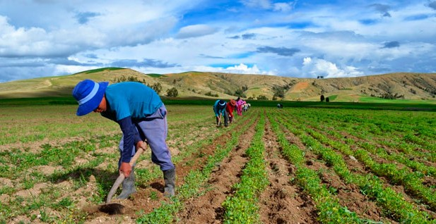

Apostando al Agro
Se busca implementar tecnologías agropecuarias que contribuyan al desarrollo rural y la seguridad alimentaria en Colombia.
Planteando e implementando nuevas tecnologías para el sector agropecuario que contribuya al desarrollo rural y la seguridad alimentaria; además, Desarrollar publicaciones especializadas en el sector agropecuario; también, definir y analizar las políticas públicas de los Estados frente al desarrollo rural y la seguridad alimentaria con el fin de sugerir la implementación de nuevas alternativas que contribuyan al mejoramiento del Desarrollo Humano Integral y Sustentable de la comunidad; seguido, promover cadenas productivas que facilite la producción, comercialización y alianzas productivas que impulsen el desarrollo rural.
Implementación de nuevos Sistemas de producción agroalimentario para la generación de alternativas diferente con vocación territorial del uso de la tierra. Establecimiento de nuevas relaciones entre el campo y la ciudad en el marco del posconflicto y su incidencia en la configuración territorial desde diferentes enfoques. Comercialización de productos con valor agregado y de producción limpia y verde mediante buenas prácticas agropecuarias por parte de las comunidades rurales.